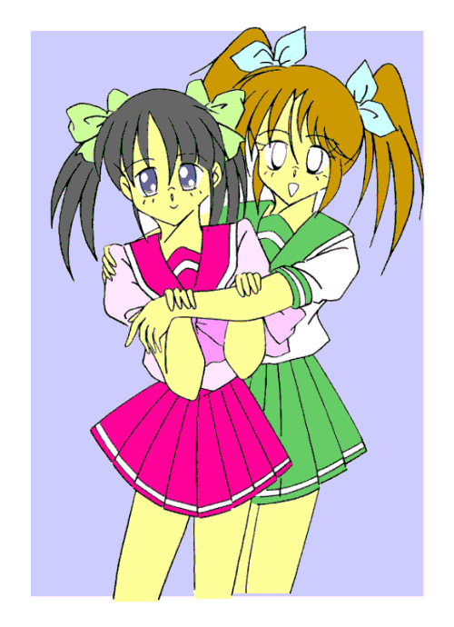
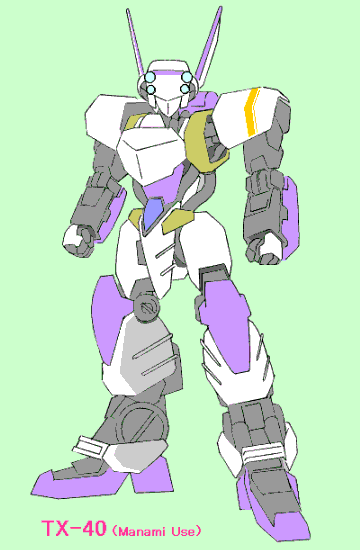
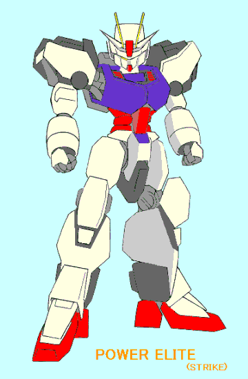
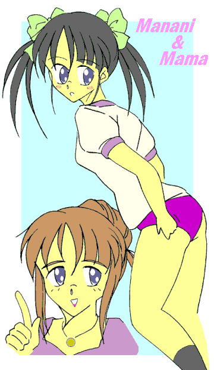

戻る
世の中には、「知らないほうがよかった」ということが結構あるらしい。
なまじ知ってしまったがために、平凡な日常に別れを告げなければならなかった……ということもあるらしい。
出会わずに済めばお互い幸せに過ごしていたはずが、出会ってしまったがために悩み、苦しむこともあるという……
それが運命なのか……偶然のイタズラなのか……それとも何者かの意思によるものか……それは誰にも分からない。
一つだけ確かなのは、知ってしまった……あるいは出会ってしまった以上、もう後には戻れないということだ。
そして……俺と「そいつ」は出会ってしまった。
変身美少女戦士ミラージュガール
（ａｎｄ 『ロボＴＲＹ美少女っ』シリーズ）
番外編：「運命の出会い？」
作：ライターマン（協力：ＭＯＮＤＯ）
俺の名前は三代武士（みしろ・たけし）。
私立津留木（つるぎ）学園の中学二年生、だった。……夏休み前までは。
現在俺は双子の妹……本当は存在しないのだが……の、三代真奈美（みしろ・まなみ）として学校に通っている。
どうして男の俺が女の子として学校に通っているのか？ その辺の事情は話すと長くなるので今回は省略する。
……どうしてもという人は、本編を見て欲しい。
「待って、真奈美お姉様」
その日の授業が終わり、一人で下校しようと思っていた俺（古木は母親の美鈴さんと帰るらしい）に、クラスメイトの吉塚さんが声をかけてきた。
「その『お姉様』ってのは止めてくれ……ない？ 前にも言った……でしょう？」
俺は思わず出かかった男言葉を何とか我慢して、多少ヒクつきながらも吉塚さんに微笑みかけた。
例の「お姉様」騒動から数日、ようやく沈静化してきたものの、まだ俺のことをそんな風に呼んでいる女の子は結構いるようだ。
困ったことに、女の子としての立居振舞いに不慣れな俺は他の女子から「浮いた」存在になっており、時々他人の前で男言葉を使ってしまうあたりも、この傾向に拍車をかけているらしい。
そこで俺はなるべく女子の輪の中に入り、言葉もなるべく女言葉を使うようにしてきた……のだが、そう簡単に女の子になりきれないし、なりきりたいとも思わない。
それでも努力（？）の甲斐あって、クラスの中に「友達」といえる女の子が少しずつ増えてきた。
だけど、この吉塚さんとはまだそれほど親しくはなかったはず。……それが何故？
「ごめんなさい、真奈美……さん。実はちょっと相談があって」
「相談？」
「ええ……といっても私じゃなく、ここにいる箱崎さんのなんですけど……」
吉塚さんの言葉とともに、彼女の後ろにいた女の子がモジモジしながら前に出てきた。
「……つまり、クラブの助っ人で次の日曜にある試合に出て欲しい、てこと？」
帰り道にあるファミレスで、吉塚さんから紹介された女の子……箱崎さんの話を聞いた俺は、目の前にあるフルーツパフェをスプーンで突っつきながらそう尋ねた。
「はい。クラブといっても会長の千早君が、その知り合いと集まって作った愛好会なんですけど……」
そう言うと箱崎さんは、顔を少し赤くしてうつむいた。
一口に「クラブ活動」といっても、活動内容によってその呼び方はいくつかある。
野球部やサッカー部のように、年に何回か行なわれる大会の予選に出場したり、校内外での活動に参加しているところには、部や同好会として学校から予算が出ている。
それとは別に、実績はないけど同じ目的をもった者同士、学校のグランドや教室を使って活動をするグループがある。これが「愛好会」である。
……当然、学校からの予算はほとんど無いに等しい。
箱崎さんの友だちの千早という男子が、同じ趣味の人間を集めて、あるスポーツの愛好会を作った。箱崎さんは愛好会唯一の女子部員で、マネージャー兼任という立場なのだ。
だがこの種目はスポーツはスポーツでも、「モータースポーツ」の類なので、機材の調達や整備にやたらと金がかかる。
今は会長ともう一人が兄貴から譲ってもらった中古のものを使っているのだが、壊すと大変なので派手な活動ができず、グランドの隅で基本動作の練習をしている程度なのだそうだ。
先日、会長の千早が学校側に呼び出されて、愛好会の活動実績が無いことを指摘された。
そこで急遽、他校との親善試合を行なうことにして、相手校の生徒会を通じて試合を申し込んだのだが……
「そこは結構評判がよくって、頼めば操縦の指導もしてくれるって噂だったんです。でも……」
「どうしたの？」
「申し込んでから数日して返事が来たんですけど、『試合をしてもいいが条件がある』って……」
「条件？」
「ええ。一つは、『試合は男女それぞれのシングルと男女混合のダブルスで行なう』でした」
「ふーん……まあ妥当な線かな？ それで、自分のほかにも女子部員を集める必要があったってことか」
「いえ、それだけじゃないんです。条件はもう一つあって、『試合に負けたら女子部員は全員、我が部のミーティングに参加して男子部員に酌をし踊りを披露せよ』って……」
「なんじゃそりゃぁぁぁ——っ！！」
思わず立ち上がって叫んだ俺に、店中から冷たい視線が浴びせられる。
慌ててまわりに謝りながら、席に座る。
「一体何なんだ……何なのよその条件は？ 抗議はしなかった……の？」
「もちろんしました。でも相手からは、『それじゃ試合はしない、それだけだ』って言われて」
「とんでもない時代錯誤野郎だな……」
「でも他に同じクラブやサークルのある学校がなかなか見つからなくって…………あたしもうどうしたらいいのか……」
震える声で話す箱崎さんの目にうっすらと涙が浮かんでいるのを見て、俺の心に火が点いた。
「判った。役に立てるかどうかは分からないけど、俺……あたしでよければ力になる……わ」
その日の夜。
「ふーん……で、試合に出ることにしたの？ その……『プラレス』だっけ？」
「……違うって。似てない訳じゃないけどサイズは全然違うし、有線操縦なんだよ」
「あらそう？ でも真奈美ってＡ．Ｔ．の操縦なんかできたの？」
「それも違う！！ やったことはないけど、その箱崎さんって女の子もほとんどマネージャーしかやってなかったから、似たようなもんだって」
「でも、それじゃあどうするの？」
「付け焼刃だけど操縦方法を教えてもらうよ。そこで相談があるんだけど……ほら、前にいた街で通ってた道場のこと憶えてる？」
「ええ。あなたに武術を教えた、ちょっと風変わりな師匠がいるあそこでしょう？ そこがどうしたの？」
「あそこはほとんど弟子をとっていなかったけど、俺のほかにもう一人兄弟子がいただろ？ その人が、確かこれの競技会で入賞したことがあるって言ってたんだ」
「競技会……って、『エンジェリックレイヤー』の？」
「ち・が・うっ！！ 母さんわざと間違えてない？ ……とにかくその人に頼んでこっちに来てもらって、土曜日だけでも操縦の指導をしてもらうんだ」
「それでその人をここに泊めて欲しい……という訳ね。判ったわ」
ピ、ポ、パ……
俺は以前教えてもらった、兄弟子の家の電話番号をプッシュした。
「……ちょっと、あなたその『声』で相手と話をするつもり？」
「あ……そ、そうだ、どうしよう？」
「しょうがないわね…………もしもし、あの三代ですけど……はい、はいそうです。……そちらでは色々とお世話になりました」
ため息をつきながら俺から受話器を受け取り、母さんが話し始めた。
どうやら向こうでも母親が出たらしく、しばらくは世間話が続いた。
「……で、実はロボットを使って格闘をする競技がありましたでしょう？ ……ええっと、『ガンダムファイト』だったかしら？」
だから違うって……
心の中で盛大に突っ込む俺だったが、母さんは電話の相手とさらに会話を続けた。
「……え？ ああ、そうそう、それです。それで、実はうちの娘が…………で、そちらの息子さんがそれの操縦ができるって聞いて……え？ ええ、でしたらこちらは構いませんけど……ちょっと待ってください」
母さんは電話を保留にして、こっちに話し掛けてくる。
「息子さんの方は用事があって行けないけど、親戚の娘さんが代わりにきてくれるそうよ。実力は息子さんとほぼ同じですって」
あの人は来れないのか……久しぶりに会えるかもしれないと期待していただけに少し残念だったが、今は操縦方法を教えてもらう方が先決だ。
俺が頷くと、母さんはその旨を相手に伝えた。
「……すいません、それでは先程の話でＯＫです。……じゃあ金曜日の夜に…………はい、ありがとうございました。……では失礼します」
そして金曜の夜。
ピンポ〜ン！！
チャイムの音に俺は急ぎ足で玄関に向かい、ドアを開けた。
開いた扉の向こうには、二人の女の子が立っていた。
奥の方に立っていたポプカットの女の子は何度か見た記憶があった。確かあの人と同じ高校生だ。
手前にいたもう一人は、俺と同じくらいか、１歳くらい年上に見えた。
長い髪を俺と同じようにリボンで左右にまとめた彼女は、お泊りセットの入ったバッグを持ったままペコンとお辞儀をした。
「あの……三代武士君のお宅でしょうか？ ……は、初めまして……文月沙織（ふみづき・さおり）……です」
それが俺と「そいつ」の出会いだった。
「すいません、沙織ちゃんの付き添いで私までお邪魔しちゃって……」
沙織さんの後ろにいた彼女は、そう言ってすまなそうに入ってきた。
俺は微笑みながら首を横に振った。
「いいえ構いませんよ。藤原ほのか（ふじわら・ほのか）……さんでしたよね？ 飯綱甲介（いずな・こうすけ）さんの彼女の……」
「違うわよっ！！ あいつとはただの幼馴染っ！！ 恋人なんかじゃないわよっ！！」
ほのかさんが顔を真っ赤にしてそう叫んだので、俺はビックリした。
「えっ！？ 違うんですか？ 甲介さんの話ではてっきり……」
「そ、それは……その……あ、あいつとは付き合い長いし……悪い奴じゃないから嫌いじゃないし…………で、でもまだ告白もされてないし……」
赤面したままそんなことを話すほのかさんを見て、俺は二人の関係を「恋人一歩手前かな？」なんて勝手に想像した。
「……で、甲介の奴はあたしのこと何か言ってた？ お兄さんから聞いてない？」
「え、え……ええっと……兄さんの話では……」
「あ、あの玄関先で立ち話もなんだからとりあえず中に入らない？」
“真奈美”としての俺は、甲介さんと会ったことがない。だから「兄から聞いた」ということで話そうとしたのだが……沙織さんは俺とほのかさんを、いきなり家の中へと押し込んだ。
……どうして甲介さんの話で、沙織さんが顔を赤くして慌ててるんだ？
「ふーん、じゃあ武士君はしばらくこっちに戻ってこれないんだ。ちょっと残念だね」
沙織さんとほのかさんを両親に会わせて紹介した後、寝室代わりのリビングに案内し、そこで俺は「自分」が転地療養で山奥の親戚に預けられている……という、例（？）のストーリーを二人に話した。
それを聞いてほのかさんが残念がり、沙織さんもうんうんと何度か頷いた。
「それにしても武士の……いえ武士君にこんなに可愛い妹がいたなんて……今まで一度も聞いたことがなかったわ」
ぎっくうぅっ！！
沙織さんの一言は、俺に致命的に近いダメージを与えた。
動揺しまくる心臓を何とか押さえ込むと、俺は沙織さんに向かって引きつり気味に微笑んだ。
「そ、そうですか？ 道場には何度か行ったことはあるんですけど…………で、でも……あ、あたしも……甲介さんにこんな美人の親戚がいるなんて……全然知らなかった、わ」
ぴしっ！！
その言葉に今度は沙織さんが硬直した。
俺と沙織さんはお互いの顔を見つめあった。
「…………」「…………」
引きつった笑顔、つつーっと流れ落ちる冷や汗……恐らく俺も同じ表情をしているだろう。
「「ア、アハハハハ……」」
俺と沙織さんの乾いた笑い声が、ものの見事にハモった。
「……ま、真奈美さん。ど、どうやらこの辺の話題はお互い触れない方がいいようね……」「そ、そうですね……さ、沙織さん」
そんな俺たちを見てほのかさんは首をかしげた。
「何でお互いに動揺しまくってるの？ ……変な二人」
「…………ふうっ」
身体を洗い流し、俺は湯船に身を沈めて大きく息を吐き出した。
あの後、俺はメガパペット……くだんのモータースポーツ「ロボＴＲＹ」で使われる格闘用ロボットのことだ……の仕組みや動かし方を、沙織さんやほのかさんに教えてもらっていた。
とはいっても、機体は明日到着で学校に送っているので、マニュアル本や雑誌の写真や記事による説明だけだった。
「アクチュエータ」とか「関節駆動制御」だの難しい言葉が出てきて俺の頭は混乱しかけたが、二人の話だとこれでも基礎中の基礎とのことだった。
詳しいことは分からなかったけど、ほとんどのメガパペットの基本的な形や動きは人間に似せて作られているとのことだった。
「まあ中には人間とかけ離れた動きをする機体もあるけど、常識的な人間はそんな機体を滅多に使わないから今回は考えなくていいと思うわ。要は人間同士の取っ組み合いと同じで、如何にしてイメージどおりに機体を動かして相手にダメージを与えるか……よ」
沙織さんはそう言って、メガパペットの動作メカニズムについて説明した。
そうすることによってメガパペットの動きを頭の中でイメージしやすくなるだろう……という理由からである。
俺は風呂の中で先程の説明を思い出しながら動きをイメージしていたが、そのうち沙織さんのことを考えるようになった。
（沙織さんって女の子なのに考え方が理論的だよな。……いや、女の子が理論的でないと言う訳じゃないけど、見た目より大人っぽいというか、どこか女の子らしくないというか……）
そんな事を考えているうちに身体が温まってきたので、俺は風呂から上がり、タオルで身体を拭いて風呂場の扉を開いた。
ガラガラガラッ！！ 「………………」「………………」
…………さっきの感想取り消し。
沙織さんはすごく女の子らしい。
パッチリとした目、小さな唇……そしてきれいに通った鼻筋や細い顎が均整に配置された顔は、これ以上ないくらい可愛らしい。
さらに胸の二つの膨らみと引き締まったウエスト、そして少し大き目のヒップが魅力的なラインを描いて…………
ああ、こんな人が俺の恋人だったら……いや、お姉さんでもいいや。沙織お姉さんかあ……いいなあ。
…………………………………………現実逃避モード終了。
「「……うわわわわああぁぁぁ——————っ！！」」
風呂場に俺と沙織さん、二人の女の子の叫び声がこだました。
翌日。
土曜日の学校は、にわかに現われた噂の転校生（？）と美少女二人に、ロボＴＲＹ愛好会だけではなく、ほかの部の部員たちも騒然となった。
「まったく、何考えてんだか……」
「いいじゃない。人が集まった方がクラブ活動の宣伝にもなるんだし、ね」
デジカメで撮影する奴までいる。あきれてつぶやいた俺に、ほのかさんが笑いながらそう言った。
「……それもそうですね」
「そうそう……あっ、ドーリー（運搬車）が来てる。あたしが受け取りに行くから、沙織ちゃんと真奈美ちゃんはここで待っててね」
そう言うと、ほのかさんは校門前に停まってるトラックへと走り出した。
残った俺と沙織さんは、呼びかけてくるギャラリー（？）に向かって愛想笑いを浮かべた。
「沙織ちゃん、真奈美、こっち向いて笑って」
その声に俺と沙織さんは声のした方を向いてニッコリと笑った。……が、
「か、母さん……！？」
そこにはデジカメを構えた母さんが立っていた。
「……な、何でここに！？」「沙織ちゃんと真奈美が一緒に並んで立ってる姿なんて、そうそうお目にかかれないじゃない。……じゃあ私はこれで失礼するわね」
母さんはそのまま帰っていった。
「……な、何しに来たんだ、いったい？」

「ほらっ、相手の動きをよく見て機体をスライドしてかわすっ！！」
「は、はいっ」
「あんまり動かしすぎるとケーブルが伸びきって危ないから、動きは最小限に抑えて！！ ……それから常に自分と機体の距離を把握して、必要に応じて自分のいる位置を移動することっ！！ いいわね？」
「わかりましたっ！！」
沙織さんのアドバイスを聞きながら、俺は自分のメガパペットを操って、ほのかさんが操縦するＴＸ−４４……愛称《キャロット》の攻撃を防いでいた。
俺が今使っているＴＸ−４０型は、旧式だけど操縦がしやすく、しかもＴＸ−４４等の新型機が出てきた為に中古だとかなり安く手に入るので、初心者用として最適の機体なのだそうだ。
うちの学校のロボＴＲＹ愛好会のメンバーが持っていたこの機体を借りて、基本動作の練習をした後、沙織さんとほのかさんに格闘戦の仕方を教えてもらっているのだ。
「……ふうっ！！」
小一時間ほど組打ちの練習をした俺は、休憩のため校舎の影に入って座りこんだ。
「お疲れ様。……はい、これっ」
「あ、ありがとうございます」
沙織さんが缶ジュースを渡してきた。俺は少し慌ててそれを受け取る。
学校の中ということもあって、沙織さんもほのかさんもそれぞれの学校の制服を着ているんだけど……目の前に立った沙織さんを見て、俺は昨日の風呂場での姿を思い出した。
……昨夜は沙織さんの裸が頭の中をちらついて、寝不足になってしまったのだ。
「真奈美ちゃん」
その沙織さんが、唐突に話し掛けてきた。
「な、なんですか？」
俺が返事をした次の瞬間、沙織さんはにこやかな笑顔のままでズイッと俺の鼻先にまで顔を近づけた。
「昨日のことは忘れろ……忘れなさいっ！！」
「は、はいぃぃっ！！」
昨日の何を？ なんてのは確認する必要はない。俺は大慌てで何度も頷いた。
沙織さんはそんな俺を見てクスッと笑うと、片目でウインクしながら言った。
「……もっとも裸を見られたのは真奈美ちゃんも同じだから、真奈美ちゃんにだけ忘れろって言うのは不公平かな？」
「うっ！！」
そういえばそうだった。
「あのときの真奈美ちゃんは濡れた髪が光ってて、肌がほんのりと赤く染まって……今思い出してもドキドキするなあ」
「や、止めてください！！ もう思い出さないでっ！！」
「じゃあこっちも忘れるから、真奈美ちゃんも忘れること。いいな…………もとい、いいわね？」
そう言うと、沙織さんは笑いながら人差し指で俺の額をチョンと突付いた。
「それにしても真奈美ちゃんって、いいセンスしてるね」
沙織さんにそう言われて、俺は大きく首を横に振った。
「そ、そんな……さっきの組打ちでも全然上手く動かせられなかったし……」
「それはトリガー（操縦器）の操作に慣れてないからだよ。パンチを繰り出すときなんか、ほとんどのビギナープレイヤー（操縦者）は単に腕を動かすだけなんだけど、真奈美ちゃんは機体全体で自然に動きの流れを作ってるし……あ、もしかして拳法とか武術とか習ってる？」
「ええ……兄さんに少し教えてもらって……」
自分が甲介さんと一緒に……と言う訳にはいかなかったので、そう言ってごまかした。
沙織さんは右手に顎を当て、少し考えこんだ後、
「ちょっと、その教えてもらった内容を見せてもらえないかな？ ……いや、メガパペットじゃなく真奈美ちゃん自身で」
「？ わ……わかりました」
沙織さんが何故俺にそんなことをさせるのか？ その意図は分からなかったけど、俺は頷いて沙織さんから少し離れた位置に立った。
両膝を軽く曲げて中腰になり、ゆっくりと息を吸い込みながら、両手の拳を胸と肩の中間くらいの位置にくるようにして構える。
「はっ！！ ……はっ！！」
左足を軸足にして右足を前に出しながら腰を回転させ、左肘を引きながら右の拳を力強く突き出し、そして次に今度は右足を軸足に変えて左右逆の動きで左拳を突き出す。
「やあっ！！ ……とうっ！！」
そして右足を高く蹴り上げ、最後に左足で回し蹴りを繰り出して最初の構えの体勢に戻った。
「へえ、すごいな。本当にお兄さんから教えてもらっただけ？ とてもそんな風に見えないよ」
パチパチパチ……と、沙織さんが手を叩きながらそう言った。
誉められて少し嬉しくなった俺は、「エヘヘ」と笑いながら頭をかいた。
「……じゃあ、『天地風水』の構えは知ってる？」
「ええ。でもそれが何か……？」
「ちょっと思いついたことがあるんだ。上手くいけばかなりいいところまでいけると思う……わ」
沙織さんはそう言うと、にやりと笑った。
（この笑い方……それにさっきの考えるしぐさ……甲介さんにそっくりだ……）
親戚でもそういうのは似てくるのかな？ そんなことを思っていると、愛好会の他の会員たちにもメガパペットの操縦を教えていたほのかさんが俺たちに近づいてきた。
「沙織ちゃん何をしてたの？ 真奈美ちゃんに拳法の真似事なんかさせて……」
「真奈美ちゃんが教えてもらったことがあるって言うから、見せてもらったんだ。で、上手く応用できないか考えていたんだ……のよ」
慌てて語尾を言い直す沙織さん。昨日から何度もそういう場面はあったのだが……
「それはいいんだけど……真奈美ちゃん、その格好ではやらない方がいいわよ。……さっき蹴りを出してたとき、スカートの中身が見えてたから」
ほのかさんのその言葉に、俺の顔は真っ赤になった。
「ほら真奈美ちゃん元気出して。……大丈夫よ、あの時他の人はみんなメガパペットの方にいて、見たのは私と沙織ちゃんだけなんだから。絶対他の人には言わないわ……約束するから」
恥ずかしさのあまりトイレに閉じこもっていた俺は、ほのかさんに説得されて、１０数分後にようやく練習を再開することになった。
「あの……沙織さんは？」
「沙織ちゃんなら先に行ってるわよ。なんでもトリガーの設定をあなた用に改造するって言ってたわ」
見ると、沙織さんは一心不乱にメガパペットとトリガーの調整をしていた。
その様子を少し離れた場所から眺めていた俺とほのかさんだったけど、俺は一瞬沙織さんの姿と甲介さんの姿がダブって見えた。
（やっぱり似ているなあ。姿や顔じゃなくて雰囲気が……）
そんなことを思っていると、やがて沙織さんがこっちに気付いて声をかけてきた。
「やっと出てきたね。実は駆動部分と、トリガーのファンクションコマンドのプログラムを真奈美ちゃん用に改造してみたんだけど……」
「俺……あたし用に？」
「うん、真奈美ちゃんって身体の動かし方はすごく上手いけど、トリガーの操作に慣れていないから、機体を動かすときにタイムラグが出てるんだ」
「そうですね」
「真奈美ちゃんは憶えるのが早いから、このままでもある程度上達するだろうけど……明日の試合までにできる事は限られてくる。そんな状態で戦うとしたら、方法は一つしかない」
「相手の攻撃を避けまくってチャンスを待つ……」
「そのとおり。そこでファンクションコマンドにそのための動作をプログラムしたんだ……したのよ。今やってみせるからちょっと見ててね」
そう言って沙織さんは、トリガーの操作部分を俺に見えるようにしてコマンドを入力する。

「天！！」
すると、ＴＸ−４０は腰を少し落として上半身を支え、両腕を少し上に向けて交差して相手の攻撃を受け止める体制をとった。
「地！！」
片膝を付き、もう一方の足と腕を盾のようにして構える。
「風！！」
静かに、そして素早い動きで前方の相手に回りこむように右に、そして左にスライドする。
「水！！」
前方からの攻撃に対して肘から先を回転させて払う動作をすると、同時に流れるような動作で相手に迫る。
「す、すごい……」
相手の攻撃を受け止め、あるいはかわしながら反撃の態勢を整える。体重移動を含めるとかなり複雑な動作を、それぞれコマンド入力一回で実現するとは……。
「これなら憶えるのも楽だし素早く動けるだろ……でしょ？ ちょっとやってみて」
「は、はいっ！！」
言われて俺はトリガーを受け取り、沙織さんがしたようにコマンドを入力してみた。
すると連続した動作にもかかわらず、先程と同じようにＴＸ−４０はコマンド入力とほぼ同時にスムーズな動きを見せた。
なるほど……これならすぐに憶えられるし、道場で練習した動きと同じだからイメージしやすい。……それに、
「この機体、さっきより動きが速くなってません？」
「よく分かった……わね。さっき潤滑剤を入れ替えておいたのよ。だいぶ古くて劣化していたのを新しいものにしたから、駆動部の摩擦が少なくなってレスポンスがよくなってるの」
「なるほど、マグネットコーティングみたいなもんですね」
「おいおい……真奈美ちゃんもそういうマニアックなところは武士君とそっくりだね」
ドキッ！！ 「そ、そうですか？ 沙織さん、兄さんのことよくご存知ですね」
ぎくっ！！ 「うっ……ま、まあね。……こ、甲介に何度か聞いてるから……」
「「……あ、あははははは…………」」
俺と沙織さんは引きつった笑いを浮かべ合った。
「……沙織さん、もうお風呂入りました？」
俺はリビングのドアを開けて中を覗いた。
「ああ……え、ええ、もう済ませた……わ」
沙織さんは既にラフな服装に着替えて、くつろいでいた。
「そうですか、それじゃあ……」
そう言って俺は扉を閉め、風呂場に向かった。
……やれやれよかった。昨日のようなことになったら、今夜も寝不足になってしまうもんな。
などと考えながら、俺は服と下着を脱ぎ捨てると風呂場の扉を開いた。
ガラガラガラッ！！
「……あら、真奈美ちゃんも今からお風呂？」
「うわああっ！！ ご、ごめんなさいっ！！」
ちょうど身体を洗っていたほのかさんをまともに見てしまった俺は、叫び声を上げながら慌てて扉を閉めようとした。
「いいわよ、女の子同士なんだし。……せっかくだから一緒に入ろっ、真奈美ちゃん」
そう言ってほのかさんは俺の腕を掴むと、風呂場の中へと引っ張り込んだ。
「ええっ！？ ……いっ、いっ、いいですっ！！」
「自分ちのお風呂なのに何遠慮してるの？ ……ほら、腰をおろして。背中洗ってあげるから」
「そ、そんなことしなくても…………あっあん……そこくすぐったい……」
「あらごめんなさい。……でも真奈美ちゃんって感じやすいのね。……ここはどうかしら？」
「いっ！？ やっ、やめてえぇぇぇ————っ！！」
……その夜も寝不足になったのは言うまでもない。
そして、日曜日。
「いよいよ……ですね」
「大丈夫よ。今までの練習で真奈美ちゃんの腕もだいぶ向上したし、中高生相手でもいい勝負が出来るわよ」
相手の到着を前にして緊張する俺を、ほのかさんはそう言って励ましてくれた。
うーん、勝たなくちゃ困るんだけど……
俺はそう思ったのだが口には出さなかった。今回負けた時の「あの」条件を、沙織さんとほのかさんには伝えてないのだ。
グランドに急遽作られた試合場の周囲には、話を聞いたうちの学校の生徒たちが大勢集まっていた。その中には古木や礼戸、それに母さんの姿も混じっている。
そしてそろそろ試合開始時間になろうかという時、突然校門の方がざわめきだした。
「どうやら、来たみたいですね……」
現われたのは十数人の人影と、巨大なドーリー（運搬車）だった。
人影たちはきれいに整列した状態で、一糸乱れぬ動きでこちらに向かって走ってくる。
「……まさかここまで走ってきたのかな？」
だとしたら相当な体力だな……と思ったのだが、沙織さんとほのかさんは、彼らの姿を見ると一気に表情を強張らせた。
「ほ、ほのかっ……さんっ！！ あ、あれって……」「ま……まさか！？ ……で、でもあんな連中、他にいるとは思えないし——」
引きつった表情のまま二人がそんな会話を交わしているうちに、その一団はどんどんこちらに近づいてくる……
……俺は彼らの姿に言葉を失った。
彼らは全員が異様なほど鍛え上げられた身体の持ち主たちだった。
ムキムキの上半身にモスグリーンのランニングシャツがぴっちりと張り付き、迷彩柄アーミーパンツにごついジャングルブーツという格好だった。
……さらに胸元にはドック・タグ（認識表）らしきものがぶら下がってる。
まるで中東かミンダナオ島に派遣された米軍が帰り道に迷って来てしまったような感じだが、その顔は純粋な日本人……しかも、高校生のようだ。
「「げげっ！ や……やっぱりぃぃぃ〜っ！！」」
俺の背後で、沙織さんとほのかさんが悲鳴を上げた。
「あの……知ってる人たちなんですか……？」
ぽつりともらしたその質問に、返事は速攻で返ってきた。
「非っ常ぉぉぉ————に不本意だけどね。あいつらはあたしたち白塁学園高校の恥部、“元祖” ロボＴＲＹ部なのよ……」
「元祖？」
「そう、部活動にかこつけて学園を荒らしまわり、あたしたち『女子ロボＴＲＹ部』の活動を妨害して潰そうとする悪の権化にして究極の軍隊おバカ集団……それがあいつら『元祖ロボＴＲＹ部』なのよ」
ほのかさんのその言葉に、今度はうちのマネージャーである箱崎さんが声を上げた。
「……元祖？ それに女子ロボＴＲＹ部って…………あったんですか！？」
「どういうこと？」
「先々週のことなんですけど、白塁学園高校の生徒会に『女子ロボＴＲＹ部と連絡を取りたい』って言ったら、しばらくして『我が校にロボＴＲＹ部は一つしかない』って返事がきて……」
「え……あっ！？ もしかしたら……」
何か思い当たることがあるようなその口ぶりに、沙織さんが「どうしたの？」と尋ねると、ほのかさんは苦々しく話し始めた。
「……先々週、生徒会に呼び出されたことがあったのよ。筋肉ダルマが来てるっていうから、また何かたくらんでるんじゃないかって思ったんだけど、着くなり『もういい』って言われて…………きっとそのときに箱崎さんの電話が入ってたのね」
「そして自分たちが対戦相手として強引に割り込んだ、って訳か。あいつらならやりそうだ……やりそうね……」
ほのかさんの言葉を継いで喋る沙織さんの顔には、怒りの表情が浮かんでいた。
ざっざっざっざっ、ざっざっざっざっ…… 「全体〜っ、止まれっ！！」「「いえっ、さーっ！！」」
号令とともに連中は俺や沙織さんたちの目の前で一斉に停止し、「休め」の姿勢をとった。
「諸〜君、全員そろっているな〜っ？」
「「いえっ、さーっ！！」」
筋肉集団の先頭にいた隊長らしき人物の言葉に、全員が唱和する。
「いよいよ津留木学園との決戦であ〜るっ！！」
「「いえっ、さーっ！！」」
筋肉集団の中でもひときわ目立つその体格と、これでもかと浮き出た筋肉。……ほのかさんたちの言う「筋肉ダルマ」とはこいつの事だろう。
「相手は中学生だがしっかあぁぁぁしっ、た〜たかいを挑まれたからにはぜ〜んりょくでこれをた〜た〜きつぶすうぅぅぅっ。……これが戦士としての礼儀であああ〜るっ！！」
「「いえっ、さーっ！！」」
つまり年下の、しかも中学生相手に手加減は一切無しって事か……大人気ない連中である。
「なあぁぁぁおっ、戦闘終了後、こ〜の学校のロボＴＲＹ部員は我が部に編入予定でああ〜るっ！！ 諸君、せ〜いだいに歓迎してやろうではなあぁぁぁいかっ」
「「いえっ、さーっ！！」」
「ちょっと待てぇぇぇ————っ！！ 勝手に作るなそんな話っ！！」
思わず叫び声を上げた俺を、筋肉ダルマ……もとい隊長は「フン」という感じでにらみつけると、
「なあぁぁぁにを言うっ。これは戦いであ〜るっ！！ 戦いは勝〜者こそがすべてであ〜るっ！！ 勝った国が負けた国を占領し、石油資源を独占するっ。……これはじょ〜しきであああ〜るっ！！」
「「「そんな常識があるかぁぁぁっ！！」」」
俺と沙織さん、そしてほのかさんの絶叫が見事にハモった。
訂正。こいつを「隊長」と呼ぶのは世間の隊長様に対して失礼だろう。……筋肉ダルマで十分だ。
「な〜んとっ、そ〜こにいるのは自称女子ロボＴＲＹ部の部長と特攻娘ではな〜いかっ！！ 女子供は口出し無用っ！！、言〜いたい事があったら勝〜ってから言うがよいっ。負〜け犬の遠吠えなど聞〜く耳持たんわであああ〜るっ！！」
傲岸不遜な筋肉ダルマのその言い様に、俺の怒りがふつふつと湧き上がってきた。
こいつらには負けられない。負けてたまるか……絶対に勝ってやるっ！！
「で〜は最初に男女混合ダブルスを行なああ〜あうっ。我が部からはこおお〜の私っ、女美川武尊（めみがわ・たける）の《パワーエリート・ストライク》と……」
「ちょっと待てええっ！！」
筋肉ダルマの言葉に沙織さんが叫ぶ。「……お前もう部長でも部員でもないだろうがっ！！」
それを聞いた俺は、ほのかさんに尋ねた。
「そうなんですか？」
「ええそうよ。一応去年高校を卒業して現在は大学生。確かに部長でも部員でもないわ」
「…………」
大学生って……合格できたのか？ この非常識な筋肉ダルマが？ いや、それ以前に高校を無事卒業できたのが信じられん……
しかし、筋肉ダルマは沙織さんの指摘にまったく動じなかった。
「なあぁぁぁにを言うっ。この私は元祖ロボＴＲＹ部の前部長にして、『永世特別名誉顧問』でああ〜るっ！！ 関係者であるから試合に出場するのは当然であああ〜るっ！！」
俺は再びほのかさんに尋ねた。
「……そうなんですか？」
「んな訳ないでしょ！！ あいつが勝手にほざいてるだけよ！！」
「とにかくっ、それはそれでいいとして……」
沙織さんの言葉に俺はズッコケかけた。
「……い、いいんですか？ あんな理屈」
「仕方ないわ。……こっちが何を言っても聞くような連中じゃないし」
答えるほのかさんもすっかり諦め顔である。
「……だいたいお前らの中に女子部員なんかいるのか？」
沙織さんのその言葉に、俺もはっと気がついた。こいつらの中に女性の姿がない事に……
「フッ、心配は無用であああ〜るっ！！ ああ〜れを見るがよおおお〜いっ！！」
しかし筋肉ダルマは余裕の笑みを浮かべると、巨大ドーリーの上の方を指差した。
するとその天井部分から白煙がもうもうと立ち上がり、中から一人（？）の人物がせり上がってきた。
……俺はその姿に再び言葉を失った。
お立ち台にふんぞりかえっていたのは……とんがり眼鏡に厚化粧、高級そうなピンク色のスーツに固太りした身体を無理矢理押し込めた「おばさん」だったのだ。
……もし「全国おばさんコンテスト」があったとしたら、ぶっちぎりの優勝は間違いないだろう。
そして彼女は腕を組み、眼鏡の奥から周囲をぐるりとにらみつけると、キンキンした甲高いで名乗りを上げた。
「あったくしが女美川の母ざ〜ますっ！！」
俺は思わず後ずさりしそうになるのをなんとかこらえた。
「女美川！？ ……ってことは、まさかあの筋肉ダルマの？」
「……そう、母親よ」
こめかみを押さえながら、ほのかさんが答えた。その顔には「やっぱり」という表情がありありと浮かんでいる。
「あ、あの人もロボＴＲＹ部の元部員……？」
思わず俺はそう尋ねかけたが、彼女が現役の女子高生（！！）だった頃にロボＴＲＹがあったとはとても思えない。
「違うわよ。ただ、あれはうちの学校の理事でもあるから……」
心底嫌そうな口調で、そう説明するほのかさん。
「ああ……“関係者”って事ですか……」
無論そんな理屈は普通通らないのだが、とにかくこいつらには何を言っても無駄なのだろう。
「どおおお〜だっ！！ これで文句はあるま〜いっ！！」
「「大ありだ！！ この野郎！！」」
筋肉ダルマの言葉に俺と沙織さんの叫び声がハモる。
……どうでもいい事だが沙織さんって興奮すると、言葉も表情もほとんど男の子と同じになってしまう。まあ、それは俺も同じ事なのだが……
そんな事を思いながら沙織さんの横顔を見ていると、その姿が再び甲介さんとダブって見えた。
……っ！？ 沙織さんってもしかして…………いやまさかな。
「そっちがその気なら、こっちも俺……いえあたしたちが出るわ！！」
「なあああ〜にをバカな事をっ！！ 貴様らは部員でも何でもないではな〜いかっ！！」
沙織さんの突然の出場宣言に、筋肉ダルマが当然（？）のごとくイチャモンをつけてきた。
「昨日この子たちに操縦方法やテクニックを教えたから、指導員としてりっぱに関係者よっ！！ だったらあたしたちにも出場する権利はあるんじゃない！？」
筋肉ダルマの抗議に、ほのかさんが猛然と言い返す。
「ふんっ、勝手な事ばかりほ〜ざきおって……」
「「「勝手なのはどっちだっ！？」」」
再び俺と沙織さん、そしてほのかさんの声がハモる。
「まあ〜あいいだろうっ。そお〜んなに言うのなら、男子の代わりに一人だけ出場を許可しよ〜うっ」
筋肉ダルマがニヤリと笑いながら言い放った。恐らくか弱い少女……に見える俺を残しておいた方が、有利だと判断したのだろう。
それに見てみると、こっちのダブルスパートナーである千早の方は相手に圧倒されてかなりビビッてる。彼にはあまり無理をさせない方が得策のようだ。
「それでいい……わよ」
そう答えながら沙織さんも、不敵な笑みを浮かべた。
巨大ドーリーから筋肉ダルマ側の試合用メガパペットが降ろされる。
ちなみに先程せり上がってきた肉ダンゴ（女美川母）は、すぐにドーリーの中へと引っ込み、そして側面のドアから降りてきた。
……一体何のためにせり上がったんだ？

最初に出てきたのは、かなり重量のありそうな機体だった。
「……あれは？」
「元祖ロボＴＲＹ部所有のメガパペットで、《パワーエリート》。……女美川重工の開発した先行量産試作機だから、パワーとスピードは市販機を軽く上回るぞ」
俺の呟きに沙織さんが答える。これだけでもかなりの苦戦が予想された。
……が、続いて出てきた機体に俺はしばらくの間口が開きっぱなしになった。
「なっ…………何ですかあれっ！？ ひ、人型じゃないですよっ！？」
それは金属で出来た巨大な「獣」、いや「蜘蛛」だった。あちこちに赤いラインが入った厚い装甲で覆われた胴体部からは八本の細く鋭い脚が伸び、そして前方にある三対のレンズ型生体センサーが、こちらを「見て」いた！！
あれがメガパペット？ 魔獣かなんかじゃないのか！？
そんなことないと分かっていつつも、俺はそう思わずにはいられなかった。
「ほ〜っほほほほ、これぞ女美川重工が生み出したバイオメックの最高傑作、その名も《フルアーマーデカプリオンくん初号機》ざ〜ますっ！！」
肉ダンゴの紹介に応えて（！）蜘蛛……もとい《フルアーマーデカプリオンくん初号機》が、
しゃぎゃああああああああっ！！
……と咆哮を上げる。
その異様さに、俺は少し声を震わせながら沙織さんに尋ねた。
「こ、こんな人間離れした機体、滅多に使われない筈じゃなかったんですか……？」
「……常識的な人間ならな」
ドーリーから降ろされた《フルアーマーデカプリオンくん初号機》は、咆哮を上げながら脚をガチャガチャとせわしなく動かし続ける。
胴体の中心部から外側に向かって電飾ラインが赤く光り輝き、その姿は俺に某特撮ヒーローを連想させ…………ないな、やっぱり。
そう言えばさっき降ろされた《パワーエリート・ストライク》も、赤・青・白のトリコロール塗装と額の部分から伸びた二対の角のようなものはまさか……
よそう。これ以上考えても、こっちの方が脱力するだけである。
２０分後……
「お互い準備は整ったよおお〜うだなっ！！」
試合場の端で向き合う四人の人間と四体の機体。
相手は女美川元部長こと筋肉ダルマの《パワーエリート・ストライク》と、その母こと肉ダンゴの《フルアーマーデカプリオンくん初号機》。
対するこちらは沙織さんのＴＸ−４４《スカーレットプリンセス》と、俺のＴＸ−４０。
「そおお〜れではっ、これより白塁学園高校元祖ロボＴＲＹ部対、津留木学園ロボＴＲＹ愛好会の第一試合を始めるのであああ〜るっ！！」
「……お互いに正式な部員は一人も参加してないけどね」
筋肉ダルマの宣言に、ほのかさんのボソッと呟くようなツッコミが入った。
「レディィィィィイッ・・・」
だが今は試合に集中しなければならない。俺と沙織さんの緊張が一気に高まる……
「・・・Ｇｏ！！」
合図と共に戦いの火ぶたは切って落とされ、俺たちは試合場の中へと飛び出した。
試合は序盤、相手側有利で進んだ。
《パワーエリート・ストライク》と《フルアーマーデカプリオンくん初号機》は、まず俺の操るＴＸ−４０から潰そうと攻撃を集中させてきた。
沙織さんの《スカーレットプリンセス》が相手の攻撃を牽制してくれているおかげで、何とか逃げ回る事は出来たが……反撃をする余裕なんて全然なかった。
「落ち着いて！！ 相手の動きをよく見て！！」
沙織さんが《スカーレットプリンセス》を《パワーエリート・ストライク》の前に移動させて、その攻撃を防ぎながら叫ぶ。
俺は《フルアーマーデカプリオンくん初号機》から少し距離をとって相手を正面に見据え、ＴＸ−４０にファイティングポーズをとらせた。
（……ようし、やってやる！！ 相手が人型じゃないから何だってんだ！！ こっちだって正義の美少女戦士として魔獣と戦ってるんだ！！）
俺は呼吸を整え、相手の攻撃を待った。
「……こ、小娘えぇぇぇぇっ！！ こうなったら一息に止めを刺してあげるざ〜ますっ！！」
逃げ回るのをやめて静かに立つ俺とＴＸ−４０の姿にいきりたった肉ダンゴは、手にしたトリガーを振り回し、《フルアーマーデカプリオンくん初号機》を突っ込ませてきた。
（右か？ ……それとも左？）
俺は逃げることなく、相手の前脚の動きに全神経を集中させる。
《フルアーマーデカプリオンくん初号機》は一気に間を詰め、右の前脚を大きく振り上げてきた。
（……右か！！）
俺は素早くファンクションコマンドを入力！！
ＴＸ−４０は「水」の動きで左の肘から先を回転させ、《フルアーマーデカプリオンくん初号機》の攻撃をかわした。
そして、右側を向けた機体の脚部と腰部を一瞬曲げた後に一気に伸ばし、相手の生体センサー部にこちらの肩をぶつけた。
ガシイィィィンッ！！
大きな音がして、《フルアーマーデカプリオンくん初号機》のレンズ型センサーのいくつかにヒビが入った。顎に相当する部分も外れかけている。
同時にＴＸ−４０の方も吹っ飛ばされる……が、下半身を安定させた形でぶつけたので少しよろめいただけですんだ。ダメージもない。
致命的ではないが、これで相手の動きが少しでも鈍くなればしめたものである。
しゃぎゃああっ！！ しゃぎゃああっ！！ しゃぎゃぎゃぎゃぎゃああぁぁぁぁ———っ！！
カウンターで受けた一撃に、《フルアーマーデカプリオンくん初号機》は頭の部分を激しく回転させながら、悲鳴じみた咆哮を上げる。
そして……
ボンッ！！ ボボンッ！！
突然その胴体部の装甲が小さな爆発を起こしながら、次々に弾け飛んでいく……
「んのああああああっ！！ ・・・こ、拘束具があああああっ！！」
肉ダンゴ（女美川母）がトリガーをポトリと取り落とし、次の瞬間頭を抱えて絶叫した。
「「拘束具っ！？」」
思わずハモリながら叫ぶ俺と沙織さん。
「あああ……あの装甲は、《デカプリオンくん初号機》の力を抑え込んで人類が制御できるようにするためのものだったざ〜ますっ！！ こ……これでもう誰も《デカプリオンくん初号機》を止める事は出来ないざ〜ますっ！！」
おい……
「「そんな危険なもの学校に持ってくるなあぁぁぁぁっ！！」」
芝居がかった動作で頭を抱えて膝をつく肉ダンゴに向かって、俺と沙織さんは同時に大声でツッコんだ。
だがその直後、暴走した《デカプリオンくん初号機》がそこへと接近し……
ゲシッ！！ ……どっぴゅうぅぅぅ————んっ！！
その脚の一本に弾かれた肉ダンゴ……女美川の母は、空高く飛んでいき…………そして消えていった。
「結局何しに来たんだ？ あのおばはん……」
沙織さんが、ぽつりと呟く。
そして完全に制御不能となった《デカプリオンくん初号機》は、俺たちを次なる目標に定めて襲いかかってきた。
以前にも増してスピードアップした動きで、《スカーレットプリンセス》とＴＸ−４０……さらに俺や沙織さんにまで攻撃を仕掛けてくる。
「と、とにかくどこかに避難を……」
そう言って沙織さんが試合場のラインを超えようとしたとき、背後から筋肉ダルマが叫んだ。
「待てええええいっ！！ 試合はまだ終わっていないのであああ〜るっ！！」
「何言ってるんだっ！！ ロボＴＲＹの競技ルールの中に、『プレイヤーの制御を離れた機体は失格とする』というのがあるじゃないか！！」
沙織さんが振り返って反論する。
確かにプレイヤーが行方不明（！！）になった今、沙織さんの言うとおりなら《デカプリオンくん初号機》は「失格」という事になるのだが……
「なあああにを言うっ！！ 失格になったのは一機のみっ。この私と《パワーエリート・ストライク》は顕在であああ〜るっ！！ これは事故でありアクシデントであああ〜るっ！！ 戦いにアクシデントはつきもので、アクシデントを利用した者が戦いに勝利するのであああ〜るっ！！」
「…………」
相変わらず自分勝手で無茶苦茶な事を言う筋肉ダルマに、俺はＴＸ−４０で直接殴り倒してやりたい衝動を覚えたが……何とかそれを押さえ込んだ。
むろん相手の身を気遣って止めたのではない。俺と筋肉ダルマの間に《デカプリオンくん初号機》が立ちはだかっていたからだ。
そして、とうとう俺たちは試合場の端にまで追い詰められてしまった。
「……ど、どうします？」
俺は隣にいる沙織さんに尋ねた。
すると沙織さんはため息をつきながら、
「仕方ない……助けを呼ぼう」
「助け？」
この状況で助けを呼ぶ？ それに「仕方ない」って……？
疑問に思った俺だったが、沙織さんはゆっくりと息を吸い込むと、大きな声で叫んだ。
「助けてえぇぇぇ——っ！！ おじい様あぁぁぁ——っ！！」
すると突然突風が吹いて土煙が上がり、《デカプリオンくん初号機》の前の地面が爆発した！！
そして、そこには一人の人物が立っていた。
下駄履きで、作務衣（さむえ）に似た藍染めの着物を着たその初老の男性は、整った髭をたくわえた口元に笑みを浮かべながら、
「ふっ……どうやら二人とも大丈夫のようぢゃの……」
……と、俺と沙織さんに語りかけてきた。
「お、お師匠様……？」
そう……そこに立っていた人物こそ、俺と甲介さんが通っていた道場の主であった。
武術の達人なのだが、「お師匠様」という呼び名以外は本名も経歴もすべて不明という謎の人物で、近所の噂で「東方不敗だ」「いやダイバ・ダッタだ」などと言われている……
「ほほう、おぬしもなかなかの美少女になるとは…………長生きはするもんぢゃのう……」
「……！！」
ニヤリと笑みを浮かべるお師匠様のその言葉に、俺は衝撃を受けた。
まさか……まさかお師匠様は、俺が……三代真奈美が「三代武士」だってことを知っているのか？
だがその時、体勢を立て直した《デカプリオンくん初号機》が、背後からお師匠様に向かって前脚を振り下ろした！！
「危ないっ！！」
しかしお師匠様は眉ひとつ動かさず、そして振り向きもせずに風が吹くかの如く身体を横にスライドさせて、《デカプリオンくん初号機》の攻撃をするりとかわした。
「やれやれ、久しぶりの師弟の再会を邪魔するとは無粋な奴ぢゃ。……どれ、このわしが相手になってやろう」
そう言うと、お師匠様はゆっくりと《デカプリオンくん初号機》のほうに向き直った。
「さあて……ショォォォウタァァァイム！！ …………ぢゃ」
お茶目なお師匠様のセリフに、俺はズッコケそうになった。
……黒服の某ネゴシエーターですか、あんたは？
しゃぎゃああああああああっ！！
猛り狂った《デカプリオンくん初号機》の前脚が、右……そして左側からお師匠様に襲い掛かる。
だがお師匠様はそれらの攻撃をかわすと、「水」の動きでその側面に回りこんだ。
《デカプリオンくん初号機》は距離をとるため大きくジャンプしてその場を離脱し、お師匠様もジャンプでそれを追う。
そして俺と沙織さんの目の前には、筋肉ダルマと《パワーエリート・ストライク》が残った。
「お〜のおおおれっ、神聖な試合に部外者を乱入させるとはっ、なあああ〜んという卑怯なことをっ！！」
「…………」
相変わらず勝手なことを言う筋肉ダルマだったが、沙織さんは余裕の表情を浮かべてこれに答えた。
「あ〜ら、これは単なるアクシデントじゃなくって？ 幸い参加資格のない人と機体は外に出ていったことだし……」
そして、ニヤリと笑みを浮かべる。「……これで心置きなく戦えるってもんだろ？」
沙織さんの《スカーレットプリンセス》は《パワーエリート・ストライク》に向かって半身の構えを取り、俺とＴＸ−４０もその横に並んだ。
その場を離れた……とは言っても、お師匠様と《デカプリオンくん初号機》は俺の視界からいなくなった訳じゃない。
しゃぎゃああっ！！ しゃぎゃぎゃあぁぁぁぁ——っ！！
威嚇するかのように咆哮を上げる《デカプリオンくん初号機》だったが、お師匠様は余裕の表情を崩さない。
「ふっ……どうした？ 遠慮はいらん。かかって来るがよい」
その挑発に《デカプリオンくん初号機》は素早くお師匠様の側面に回りこむと、その場で八本の脚を素早く動かし始めた。
お師匠様に対する攻撃……ではない。移動することもなく、ただ足元の地面を掻いているだけである。
だがその結果、砂や埃が煙のように立ち上がり、それがお師匠様のほうへ流れていく……
まさかさっきの移動は、お師匠様の風上に回るためのものだったのか？
「……むおっ！？」
突然襲ってきた大量の砂と埃に声を上げるお師匠様。そしてその土煙の中から《デカプリオンくん初号機》が奇襲をかけてきた！！
……が、
ヒュッ！！ 「・・・吩っ！！」 パアァァァンッ！！
襲い掛かるいくつもの脚をすべて躱しきったお師匠様は、《デカプリオンくん初号機》の真下に潜り込み、乾いた音ともに掌底を放った！！
すると《デカプリオンくん初号機》の機体は少しだけ宙に浮き……次の瞬間、
ずずうぅぅ——んっ！！
《デカプリオンくん初号機》は胴体部分を地面にめり込ませ、八本の脚をワキャワキャと苦しそうにうごめかせていた。
お師匠様は、ふっ……と微笑みながら呟いた。
「アイデアは悪くなかったんぢゃがの……煙幕程度ではワシの目をごまかす事は無理ぢゃよ」
一方、俺と沙織さんは二人で筋肉ダルマを相手にしていた。
しかし、頑丈でしかも重量の割に動きが素早い《パワーエリート・ストライク》に、なかなか決定的なダメージを与えられないでいた。
「よ〜しっ、……真奈美ちゃん、『ジェットストリームアタック』だっ！！」
「え！？ でもあれって……」
その指示に俺は疑問の声を上げかけたが、自信タップリに笑った沙織さんの表情に、反射的に頷き返していた。
《スカーレットプリンセス》が《パワーエリート・ストライク》に向かってダッシュ。俺はＴＸ−４０と一緒に、そのすぐ後ろを追いかけた。
「なあああ〜まいきな事をっ！！ ふうううみ台にしてく〜れ〜る〜わあ〜っ！！」
筋肉ダルマの《パワーエリート・ストライク》が《スカーレットプリンセス》を踏み台にすべく、轟音とともにジャンプする。
「真奈美ちゃん、左っ！！」
沙織さんがそう叫びながら、次の瞬間右方向へ《スカーレットプリンセス》を移動させる。
俺はトリガーにコマンドを打ち込みＴＸ−４０を左方向へ移動させながら、その右手を伸ばして《スカーレットプリンセス》と手をつないだ！！
どっこおおおおお〜んっ！！
空中で体勢を変えられなかった《パワーエリート・ストライク》は、ＴＸ−４０と《スカーレットプリンセス》がつないだ腕に脚を引っかけ、バランスを崩して頭から地面に突っ込んだ。
衝撃で頭部が吹っ飛んだ《パワーエリート・ストライク》だったが、それでも致命的なダメージにはなっていなかった。
「ぬうおおおおおっ！！ ま〜だだっ！！ たあああかがメインカメラをやられただけであ〜るっ！！」
……どーでもいい事だが、こいつもかなりのマニアのようである。もっともそのおかげで、さっきは次の行動が読めたのだが……
首なしの《パワーエリート・ストライク》はゆっくりと立ち上がり、多少ぎこちない動きではあったが、俺たちに向かってファイティングポーズをとった。
そして《デカプリオンくん初号機》の方も、お師匠様から受けたダメージから回復し、ぎくしゃくと俺たちの方に近づいてきた。
だが……
がしいぃぃぃ——んっ！！
お師匠様に受けたダメージのため錯乱していたのか、《デカプリオンくん初号機》は突如《パワーエリート・ストライク》に襲い掛かった！！
必死の抵抗も空しく、《パワーエリート・ストライク》は《デカプリオンくん初号機》に組み伏せられ……そして、
「《パワーエリート・ストライク》を……喰ってる？」
そう、まさに《デカプリオンくん初号機》は、《パワーエリート・ストライク》を「喰って」いた。
装甲を剥がし、中の機械やら電子装置などを顎で噛み砕いて飲み込んでいたのだ！！
呆然としてその光景を見ていた俺だったが、ある可能性に気がついて思わずそれを口にした。
「……っ！！ ま、まさか、《パワーエリート・ストライク》に組み込まれているＳ２機関を取り込もうとしているのでは？」
「なんだって！？ そんなことになったら覚醒、解放された初号機を誰も止められなくなってしまう…………って、んなわけないだろっ！！」
俺が抱いた不安を沙織さんはきっぱりと否定した。……ま、そりゃそうだろうな。
そして筋肉ダルマは、
「うおおおおおっ！！ なあああにをするううっ！！ そおおおこからはあああな〜れるのであああ〜るっ！！」
拳を握りしめてそう絶叫すると、いきなり《デカプリオンくん初号機》に殴りかかった！！
しかし……
ゲシッ！！ ……どっぴゅうぅぅぅ————んっ！！
食事を邪魔されて怒った（？）《デカプリオンくん初号機》が脚を一閃。筋肉ダルマは肉ダンゴと同様、遥か彼方までふっ飛ばされ消えていった。
唖然としたギャラリーが見守る中、試合場に残っているのは、４体の機体（うち１つはほとんど残骸）と呆然と立っている俺たち２人のみ……
「沙織さん……こういう場合、試合の勝敗ってどうなるんでしょう？」
「さあね。相手方両者リングアウトで、こっちの勝ちって事でいいんじゃないか？ ぜんぜん実感わかないけど……」
「……そうですね」
こうして長く、激しく、そして虚しい戦いは終わりを告げた。
…………もうこんなの二度とやりたくない。
結局、「親善試合」はその時点でお流れになった。
学校とその周辺は元祖ロボＴＲＹ部の部員や女美川重工のスタッフたちが、筋肉ダルマや肉ダンゴの捜索に走り回ったり、《デカプリオンくん初号機》の捕獲ですったもんだして、しばらくは騒然となった。
ちなみに筋肉ダルマと肉ダンゴは多少の打撲はあるものの、たいした怪我もなく発見されたそうである。
…………頑丈な奴らだ。
試合の結果についてはうやむやにされてしまったが、実質的には俺たちの勝ちだし、例の負けた時の「あの」条件を実行しなくてもよくなったのだから、もうどうでもいいことである。
お師匠様は《デカプリオンくん初号機》にダメージを与えた後、忽然と姿を消してしまった。
元祖ロボＴＲＹ部の連中が引き上げた後の試合場では、白塁学園高校女子ロボＴＲＹ部との交流会が開かれる事になり、ほのかさんが操縦の指導や模擬戦の相手をしてくれた。
俺と沙織さんは砂と埃だらけになった制服を着替えることにして、沙織さんは体育館の更衣室、俺は体操服が置いてある自分の教室へと向かった。

ガラガラッ！！
「ええっと……あったあった」
「よかったわ。じゃあ制服はすぐにクリーニングに出すから早く着替えて」
母さんに急かされて、俺は制服を脱ぎ始めた。
胸のリボンを解き…… 「……母さん、ちょっと向こうを向いてて」
「あら、親子だし女同士だから恥ずかしがることないでしょ？」
「母さんっ！！」「はいはい……」
母さんは笑いながらきびすを返した。
……ったく、息子をからかうのもいいかげんにして欲しいものである。
最初にブルマを穿いてからスカートを脱ぎ、続いて制服の上着を脱ぐ。ブラジャーのみになった上半身に自分の身体ながら少しドキドキした俺は、急いで体操服の上着を頭からかぶり、裾をブルマの中に入れて着替えを完了した。
「……終わったよ。母さん」
「じゃあクリーニング屋に行ってから、一度家に帰って着替えを持ってきてあげるわ。真奈美は鍵を用務員さんに返してきて」
「わかった」
そう言って俺と母さんは教室を出たのだが……そこには意外な人物が立っていた。
「二人とも、久しぶりぢゃのう」
「あら、お師匠様。先程は娘のピンチを助けていただいて、本当にありがとうございます」
「いやいや無事で何よりぢゃ。ところでそこにおる武士のことぢゃが……」
どっきいぃぃぃんっ！！
「な、な、何を言ってるんです？ あ……あたしは武士兄さんの妹の真奈美です。お、お、お師匠様とは、は……初めて……」
「無理をせんでもよい。しばらくぶりでその姿が女体に変じようと、弟子の気配がわからぬワシではないわい」
「…………はい」
にこやかな顔をしてきっぱりと断言するお師匠様に観念して、俺は自分が「武士」である事を認めた。
母さんが帰った後、俺は今までの事情を一通り説明し、それを聞き終わったお師匠様は顎に手を当てて頷いた。
「ふむ……では異界からの侵略者と戦うために正義のヒロインとして変身し、女性（にょしょう）として生きることを選んだ……と？」
「い、いや……『選んだ』んじゃなくて、『事故』でこうなってしまって……」
お師匠様にじっと見つめられ、俺は思わず口ごもる。「そ、それにこの姿は一時的であって、この先ずっと女のままって訳じゃないんですけど……」
「安心せい、お主が女性として生きることになったとしても、ワシはお主に対する扱いを変えるつもりはない。……おおっ、そういえばここにくる途中、近くの森で変わった姿の獣と怪しげな輩（やから）を見かけたが、あれがお主の言う魔獣や魔人ぢゃったのかのう……？」
「いや、だから俺はこの先ずっと女性で生きてくつもりは…………って、魔獣と魔人に出会った！？ ど、どこでっ！？」
「これこれ……今から行っても無駄ぢゃ。問答無用で襲い掛かってきたものだから、ちょっと懲らしめたら泣きながらどこかに行ってしまったぞ」
こともなげに言ったお師匠様の言葉に、俺は絶句した。
……やはりこの人はただ者ではないっ。
「ところで武士……いや真奈美よ、言っておきたいことがある」
「は、はいっ」
「今後はワシのことを『師匠』とは呼ばず……『おじいさま』と呼ぶがよいっ」
…………おいっ。
やはりこの人はよくわからない人である。
夕方。
「今日は本当に大変だったわね、真奈美ちゃん」
「ええ、できれば今回限りにしたいですね。それよりも今日はどうもありがとうございました、ほのかさん」
《スカーレットプリンセス》と《キャロット》をドーリーで運び出し、帰り支度を終えたほのかさんと俺は握手を交わした。
ほのかさんはロボＴＲＹ愛好会会長の千早に自分の連絡先を教え、「これからは直接連絡をするように」と念を押していた。
今後は二度とこのようなことはないだろう……と思う。
「……ナイスファイトだったよ、真奈美ちゃん」
「いえ、沙織さんがいなかったら俺……あたしなんかあっという間にやられてました。本当にありがとうございます」
ほのかさんに続いて、俺は沙織さんが差し出した手を握り返した。
沙織さんの連絡先は教えてもらえなかった。ほのかさんの話だと、彼女は正式な女子ロボＴＲＹ部の部員というわけではなく、時々甲介さんの家や部室に顔を出しているだけなのだそうだ。
「……ところで沙織さん？」
「なに？」
「沙織さんって、ときどき人が変わったように激しくなるときがありますよね。試合のときとか……」
ぎくっ！！ 「えっ！？ あ、ああ、まあちょっとね。で……でも、そう言う真奈美ちゃんも、試合の時なんかほとんど男の子みたいだった……わよ」
ドキッ！！ 「……そ、そうでしたか！？」
「「…………あ、あははははは……」」
引きつった顔を見つめ合い、どちらからともなく出た乾いた笑い声が見事にハモる。
「沙織ちゃん。そろそろバスが来るわよ」「わかった……わ、ほのかさん」
校門前のバス停でバスの時刻を確認したほのかさんが、沙織さんを呼んだ。
「……あっ、ちょっと待って沙織さん」
その場を離れようとした沙織さんを、俺はあわてて呼び止めた。
……試合の後から、ずっと疑問に思っていた。
普段の沙織さんは女の子らしく振舞っているけど、時々らしくない行動をとるときがある。試合の時なんか、ほとんど男の子みたいだった（……まあ、俺の方もそうだったんだが）。
それに、お師匠様が現れたあの時、俺に向かって「おぬしも……」と言っていたことが、妙に引っかかっていた。
俺みたいな、男から女に変わることができる存在が、他にもいるというのだろうか？
そして沙織さんの姿にときどきだぶる、甲介さんのイメージ……
「どうしたの、真奈美ちゃん？」
首を傾げる沙織さん。幸い近くに人はいない……聞くなら今しかない。
「さ、沙織さんっ！！ 沙織さんって……も、もしかしたら……こ、こ……………………い、いや、いいです……なんでもありません」
「…………」
声を詰まらせながらも訊いてみようとしたその質問の言葉を……俺は最後まで言うことが出来なかった。
……怖かった。
問いかけて、そして予想どおりの答えが返ってきたとしたら…………もう二度と戻れないところへ足を踏み入れるような……そんな気がした。
こわばりかけていた沙織さんの表情が、少し緩んだ。
「そう……そうね。多分お互い今のままでいた方が、一番幸せだと思うわ」「……そうですね」
そう言って、俺たちは微笑みあった。
「……じゃあ真奈美ちゃん、またいつの日か」
そう言うと、沙織さんは手を振りながらほのかさんの方に小走りに駆けていった。
「はい、縁があったらまた会いましょう。それまでお元気で」
俺も二人に向かって手を振った。
やがて二人は到着したバスに乗り込み、バスは二人を乗せて走り去っていった……
（おわり）
おことわり
この物語はフィクションです。劇中に出てくる人物、団体は全て架空の物で実在の物とは何の関係もありません。
あとがき
どうも、ライターマンです。
ミラージュガール番外編、ようやく完成しました。
本編の中で時々出ていた「師匠」が私の中ではロボＴＲＹシリーズのお師匠様と結構ダブっていて、「いつか出してみたいな」と前から思っていました。
で、どうせだったらほのかさんと沙織ちゃんも出してしまえ！！ と思って作り始めてみると、女美川親子に《デカプリオンくん初号機》まで出てきて……と、気がつけばかなりの大作になってしまいました。
ロボＴＲＹシリーズの名を汚さぬ（？）ように過去の作品を読み返しながら考えられるイベント（笑）を一通り入れてみたつもりですので、どうぞお楽しみ下さい。
最後にイラストを送っていただき、編集も手伝っていただいたＭＯＮＤＯさんに深く感謝します。
それではまた。
戻る
□ 感想はこちらに □